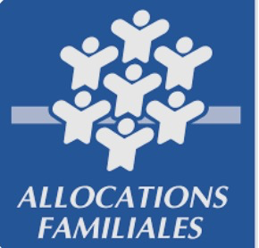

Au sens de l'INSEE, c'est l'ensemble des occupants d'un même logement, avec ou sans lien de parenté. Une colocation est un ménage. Une personne seule aussi.
Sur une fiche de paie, le chiffre du haut n'est jamais celui qui arrive sur le compte. Comprendre d'où vient l'argent d'un ménage, c'est la première étape pour tenir un budget.
Au sens de l'INSEE, c'est l'ensemble des occupants d'un même logement, avec ou sans lien de parenté. Une colocation est un ménage. Une personne seule aussi.
Brut − cotisations = net à payer. Net à payer − prélèvement à la source = net payé. Le bulletin fait deux fois le calcul.
C'est une ligne obligatoire depuis 2023, et c'est ce chiffre-là qu'on déclare à la CAF ou à la MSA. Pas le brut, pas le net payé.
| Éléments | Base | Taux | Montant |
|---|---|---|---|
| 1Salaire de base | 151,67 h | 12,31 € | 1 867,02 |
| Total brut | 1 867,02 | ||
| 2Santé, maternité, invalidité | 1 867,02 | — | 0,00 |
| Retraite Sécurité sociale | 1 867,02 | 6,90 % | 128,82 |
| Retraite complémentaire | 1 867,02 | 4,01 % | 74,87 |
| Assurance chômage | 1 867,02 | — | 0,00 |
| CSG déductible | 1 834,35 | 6,80 % | 124,74 |
| CSG / CRDS non déductible | 1 834,35 | 2,90 % | 53,20 |
| Total des cotisations salariales | 20,4 % | 381,63 | |
| 3Montant net social | 1 485,39 | ||
| 4Net imposable | 1 538,59 | ||
| Net à payer avant impôt | 1 485,39 | ||
| 5Prélèvement à la source | 1 538,59 | 1,30 % | −20,00 |
| 6Net payé | 1 465,39 € |
↔ Fais glisser le bulletin pour voir toutes les colonnes.
Le net imposable (1 538,59 €) est plus élevé que le net à payer : la CSG non déductible y est réintégrée. C'est sur lui que l'impôt est calculé. Au SMIC, le net avant impôt tourne autour de 1 478 € selon la mutuelle et la convention collective.
| Famille | D'où ça vient | Exemples | Qui verse |
|---|---|---|---|
| Revenus du travail | D'un travail fourni | Salaire (salarié du privé), traitement (fonctionnaire), honoraires (avocat, infirmier libéral), revenu de l'auto-entrepreneur | Un employeur ou un client |
| Revenus du capital | D'un bien que l'on possède | Fonciers : loyers d'un logement ou d'une terre agricole. Mobiliers : intérêts d'un livret, dividendes d'actions | Un locataire, une banque |
| Revenus en nature | D'un avantage lié à l'emploi | Voiture ou logement de fonction, repas fournis, téléphone. Ce n'est pas de l'argent, mais c'est une dépense en moins | L'employeur |
| Revenus de transfert | De la solidarité nationale, sans travail fourni au même moment | Allocations familiales, RSA, allocation chômage, pension de retraite, remboursements de santé | CAF ou MSA, France Travail, Assurance Maladie |

FamilleLa Sécurité sociale compte cinq branches : maladie, accidents du travail, retraite, famille et autonomie. L'assurance chômage est un régime distinct, indemnisé par France Travail. L'argent prélevé sur les salaires revient aux ménages sous forme de revenus de transfert : c'est la redistribution.
Contrat de 24 h par semaine au SMIC :
1Trois amis partagent un appartement. Combien de ménages, au sens de l'INSEE ?
Un seul. Le ménage est l'ensemble des occupants d'un même logement, qu'il y ait un lien de parenté ou non.
2Classe ces revenus : le loyer d'un studio, une allocation chômage, une voiture de fonction, un salaire.
Loyer = revenu du capital (foncier) ; allocation chômage = revenu de transfert ; voiture de fonction = revenu en nature ; salaire = revenu du travail.
3Un salarié gagne 2 100 € brut. Les cotisations s'élèvent à 21 %. Calcule son net avant impôt.
2 100 × 21 % = 441 € de cotisations ; 2 100 − 441 = 1 659 € net avant impôt.
4Tu dois déclarer tes ressources à la MSA. Quelle ligne du bulletin recopies-tu ?
Le montant net social.
5Pourquoi dit-on que les cotisations sont une forme de solidarité ?
Chacun cotise pendant qu'il travaille, et reçoit quand il en a besoin : maladie, chômage, retraite, charges de famille. Ceux qui travaillent financent ceux qui ne le peuvent pas.